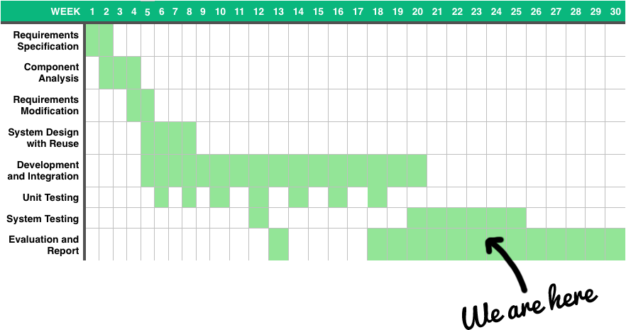

CS310 Third Year Project
Aaron Conway
A little bit about myslef...
- My name is Aaron Conway
- I'm a pure CS student
- I'm a freelance designer and front-end web developer
The Problem.
Personal
General
- Re-typing common pieces of code
- Lengthy (mundane) process
- Prioritising design over functionality
- Poorly designed websites
- Similarity of websites

Skeleton
The Solution...

Eden.
The front-end framework for beautiful design.
How was Eden built?
Research
Self Knowledge
Development Methodology
Agile
Testing
Peer


Case Studies


Demo
Project Management
Jul 24, 2016 – Mar 5, 2017


Further Work
The end is not nigh.
(There is no end.)
(Álvaro Trigo, https://twitter.com/IMAC2/status/796070516004192256)